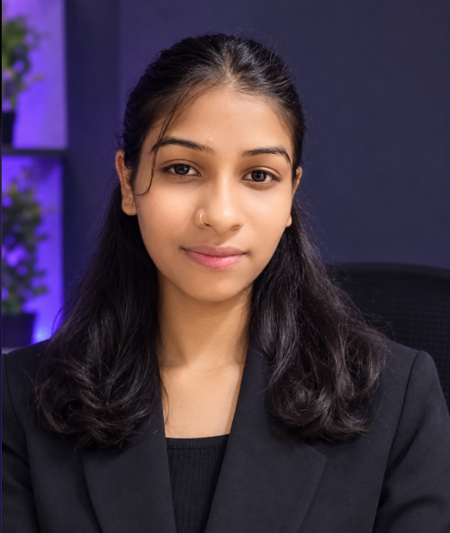

Continuous Learning
Growing my understanding one concept and project at a time.
Aspiring Software Developer MCA Student Web Development Enthusiast
I'm a passionate technology enthusiast with a background in BCA and a growing interest in software development, modern web technologies, and useful digital solutions. I enjoy learning new technologies and turning ideas into practical experiences.

My journey began with a Bachelor of Computer Applications and continues as I pursue my MCA. I'm exploring software development through hands-on learning, especially modern web technologies, applications, and databases. I enjoy solving problems creatively and building practical projects that make ideas easier to use.
Growing my understanding one concept and project at a time.
Exploring thoughtful, useful approaches to everyday challenges.
Learning by shaping ideas into clear and usable experiences.
Master's studies continue.
Building a strong foundation.
Also exploring agriculture technology.
My academic path continues to shape how I learn, solve problems, and approach technology.
Undergraduate degree completed. College, year, and other details can be added when confirmed.
Postgraduate studies in progress. College and expected completion details can be added when confirmed.
A growing toolkit across web development, programming, and databases. Skill levels are not rated here.
One featured project concept centered on making agricultural information easier to explore.
An agriculture-focused website concept for accessible farming information.
Visual concept preview · not a live agriculture data service
AgroNexus is an agriculture-focused web project designed to explore how digital technology can support farmers and make agricultural information easier to access.
More projects will be added here as they are ready to share.
Development capabilities I'm growing through study and practice—not a list of past paid client work.
Layouts that adapt across screen sizes.
Clear, accessible web page experiences.
Learning to connect interfaces with structured data.
Exploring the fundamentals of useful applications.
Practicing usability, responsive layouts, and visual clarity.
A work in progress. This journey reflects areas I'm actively interested in developing, not completed certifications.
Strengthening the fundamentals behind interactive, maintainable web interfaces.
Learning how frontend and backend pieces fit together to support useful applications.
Building familiarity with organizing, querying, and working with application data.
Applying new concepts through small projects and steady iteration.
I'm always interested in learning, collaborating on creative ideas, and exploring opportunities to grow as a developer.